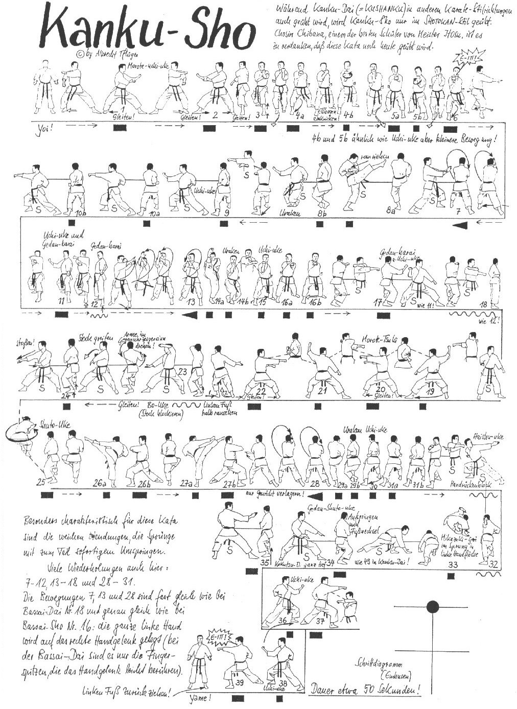

Kanku Sho

- Yoi andando in Hachiji Dachi
- Yori Ashi ruotando di 90° verso sinistra ed eseguo Morote Uke sinistro.
- Yori Ashi ruotando di 180° verso destra ed eseguo Morote Uke destro.
- Yori Ashi ruotando di 90° verso sinistra ed eseguo Morote Uke sinistro.
- Avanzo in Migi Zenkutsu Dachi eseguendo Oi Tzuki che viene successivamente richiamato in Uchi Uke.
- Avanzo in Hidari Zenkutsu Dachi eseguendo Oi Tzuki che viene successivamente richiamato in Uchi Uke.
- Avanzo in Migi Zenkutsu Dachi eseguendo Oi Tzuki. Kiai.
- Mawatte ed eseguo Haito Uke destro come ad intercettare Tzuki, la mano sinistra stringe il polso destro.
- Richiamo al fianco destro le braccia senza staccare le mani ed eseguo Mae Geri destro.
- Senza richiamare il calcio scendo in Kosa Dachi destro eseguendo Otoshi Uraken Uchi.
- Allungo all’indietro la gamba sinistra andando in Migi Zenkutsu Dachi ed eseguo Uchi Uke destro.
- Senza spostarmi eseguo Ren Tzuki (sx/dx).
- Mawatte in Hidari Kokutsu Dachi ed eseguo insieme Gedan Barai sinistro Migi Yoko Uchi Uke.
- Richiamo la gamba sinistra in Teiji Dachi ed eseguo lentamente Hidari Gedan Barai.
- Avanzo in Migi Zenkutsu Dachi ed eseguo Haito Uke destro come ad intercettare Tzuki, la mano sinistra stringe il polso destro.
- Richiamo al fianco destro le braccia senza staccare le mani ed eseguo Mae Geri destro.
- Senza richiamare il calcio scendo in Kosa Dachi destro eseguendo Otoshi Uraken Uchi.
- Allungo all’indietro la gamba sinistra andando in Migi Zenkutsu Dachi ed eseguo Uchi Uke destro.
- Senza spostarmi eseguo Ren Tzuki (sx/dx).
- Mawatte in Hidari Kokutsu Dachi ed eseguo insieme Gedan Barai sinistro Migi Yoko Uchi Uke.
- Richiamo la gamba sinistra in Teiji Dachi ed eseguo lentamente Hidari Gedan Barai.
- Rotazione in senso antiorario di 90° andando in Hidari Kokutsu Dachi ed eseguo contemporaneamente Jodan Uchi Uke destro Gedan Barai sinistro.
- Spostamento laterale verso sinistra in Kiba Dachi ed eseguo Yama Tzuki orizzontale.
- Faccio perno sui talloni e ruoto di 180° in Migi Kokutsu Dachi ed eseguo contemporaneamente Jodan Uchi Uke sinistro Gedan Barai destro.
- Spostamento laterale verso destra in Kiba Dachi ed eseguo Yama Tzuki orizzontale.
- Richiamo il la gamba sinistra ed avanzo a 90° in Migi Kokutsu Dachi eseguendo Bo Uke destro.
- Inverto la posizione delle mani come a rivoltare il bastone verso l’avversario.
- Eseguo Ushiro Tobi di 360° con atterraggio in Migi Shuto Uke.
- Richiamo la gamba sinistra ed eseguo Hidari Yoko Geri e Uraken Uchi.
- Richiamo il piede sinistro al ginocchio destro e scendo in Hidari Zenkutsu Dachi eseguendo Morote Empi Uchi destro.
- Mawatte ed eseguo Migi Yoko Geri e Uraken Uchi.
- Richiamo il piede destro al ginocchio sinistro e scendo in Migi Zenkutsu Dachi eseguendo Morote Empi Uchi sinistro.
- Ruoto le anche di 90° in senso anti orario in Migi Zenkutsu Dachi ed eseguo Haito Uke destro come ad intercettare Tzuki, la mano sinistra stringe il polso destro.
- Richiamo al fianco destro le braccia senza staccare le mani ed eseguo Mae Geri destro.
- Senza richiamare il calcio scendo in Kosa Dachi destro eseguendo Otoshi Uraken Uchi.
- Allungo all’indietro la gamba sinistra andando in Migi Zenkutsu Dachi ed eseguo Uchi Uke destro.
- Senza spostarmi eseguo Ren Tzuki (sx/dx).
- Carico il braccio sinistro sotto il destro e, mentre avvicino leggermente il busto al ginocchio destro in linea con la gamba sinistra, lo allargo andando ad eseguire Haishu Uke a 45° verso l’alto con una leggera torsione del busto.
- Eseguo Tobi Mikazuki Geri destro e atterro appoggiando entrambe le mani in un lungo Zenkutsu Dachi.
- Sollevo lo sguardo e successivamente salto sul posto eseguendo Hidari Kokutsu Dachi Shuto Gedan.
- Avanzo in Migi Kokutsu Dachi Shuto Chudan.
- Ruoto di schiena di ¾ ed eseguo Uchi Uke sinistro.
- Avanzo in Oi Tzuki destro.
- Mawatte ed eseguo Uchi Uke destro.
- Avanzo in Oi Tzuki sinistro.
- Richiamo la gamba sinistra e arretro in Hachiji Dachi.
- Yame!